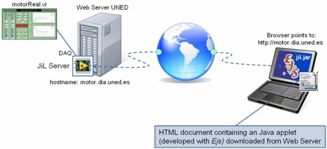

This approach is based in the use of a LabVIEW generic communication module so-called JiL Server which implements the communication layer needed to publish other LabVIEW VIs (as for instance, a Local Control VI with Hardware in the Loop) through Internet. Using this approach, Java applications are able to connect and control remote VIs by means of JiL Server. Figure 1 shows a schematic diagram that illustrates this approach.

Figure 1: Communication Java/LabVIEW through JiL Server.